Análisis de plataformas similares con foco en referentes colombianos y latinoamericanos, complementado con dos referentes globales para identificar el estándar del mercado y las oportunidades de mejora para CUN.
Orientar la evolución estratégica de CUN Experience con base en lo que ya existe y funciona en el contexto colombiano y latinoamericano.
Analizar funcionalidades de plataformas con contexto similar al colombiano para adaptar, no copiar, lo que ya funciona en la región.
Comparar CUN Experience frente a referentes locales e internacionales para priorizar el roadmap de desarrollo con evidencia real.
Traducir hallazgos en oportunidades concretas que fortalezcan la experiencia y la calidad del servicio educativo de la CUN.
3 colombianas, 1 latinoamericana y 2 globales como referente de estándar internacional.
Plataforma institucional propia para seguimiento integral del estudiante. Centraliza alertas, intervenciones, caracterización, notificaciones, información financiera con CTAyuda, horarios y gestión de grados con pruebas Saber Pro.
Software colombiano para instituciones de educación superior. Dashboard con búsqueda por cédula, alertas tempranas, encuestas configurables, módulos de bienestar y acompañamiento. Integra con ERPs colombianos. El referente local más parecido a CUN Experience.
Sistema oficial colombiano de prevención de deserción estudiantil, diseñado por el CEDE de la U. de los Andes. Consolida datos de todas las IES colombianas, integra SNIES + ICFES + ICETEX y calcula el riesgo de deserción por estudiante. Referente obligatorio de política pública educativa.
Startup chilena líder en edtech latinoamericana. Presente en Colombia con la U. de los Andes, EAFIT, Uniminuto y la Gobernación de Cundinamarca. Combina IA predictiva de deserción, app móvil uExperience, chatbot institucional con IA generativa y seguimiento modular. Premio Microsoft Partner del Año.
Referente mundial de plataformas de éxito estudiantil. Incluido como benchmark de estándar internacional para identificar la brecha que CUN podría aspirar a cerrar a largo plazo. IA avanzada, consejeros integrados y app móvil robusta.
Módulo de retención del ERP Banner de Ellucian, usado por varias universidades grandes de Colombia. Referente de integración ERP-seguimiento estudiantil. Alertas automáticas, workflows configurables, analítica de cohortes y notificaciones multicanal.
Resumen de descripción, información de la empresa, funcionalidades clave y oportunidades en un formato tipo hoja de cálculo para lectura rápida.
| Company Description | CUN Experience | ADVISER | SPADIES 3.0 | uPlanner | EAB Navigate 360 | Ellucian Retention |
|---|---|---|---|---|---|---|
| Compañía / origen | CUN 🇨🇴 Institucional (propia) |
Bersoft 🇨🇴 Bogotá |
MEN 🇨🇴 Estado |
uPlanner 🇨🇱 LATAM (presente en 🇨🇴) |
EAB 🇺🇸 Global |
Ellucian 🇺🇸 Global (Banner) |
| Screenshots (software) |
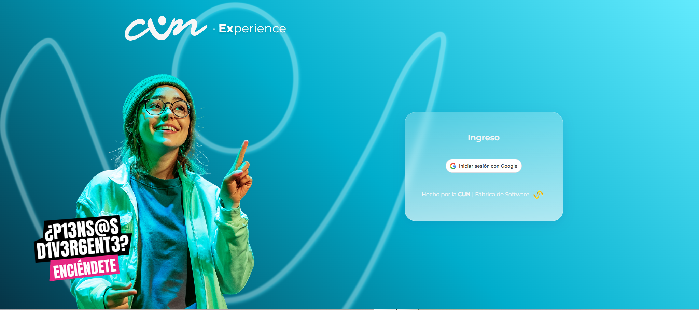 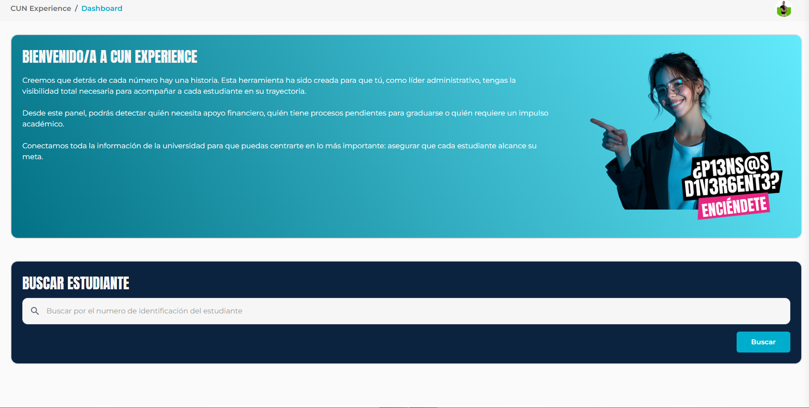 |
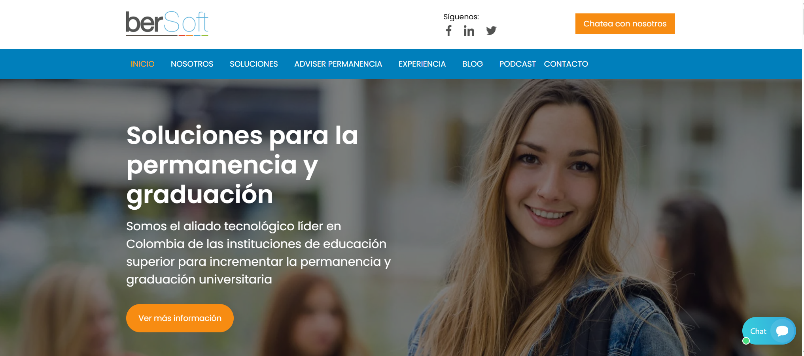 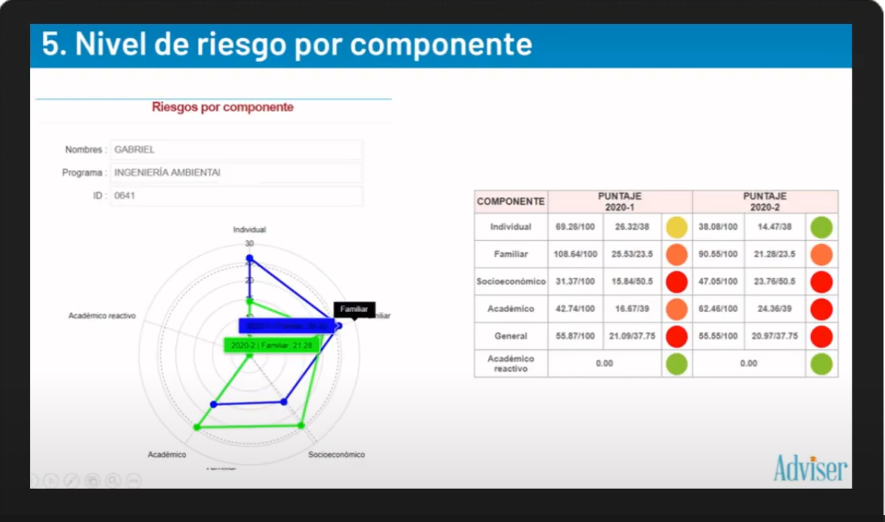 |
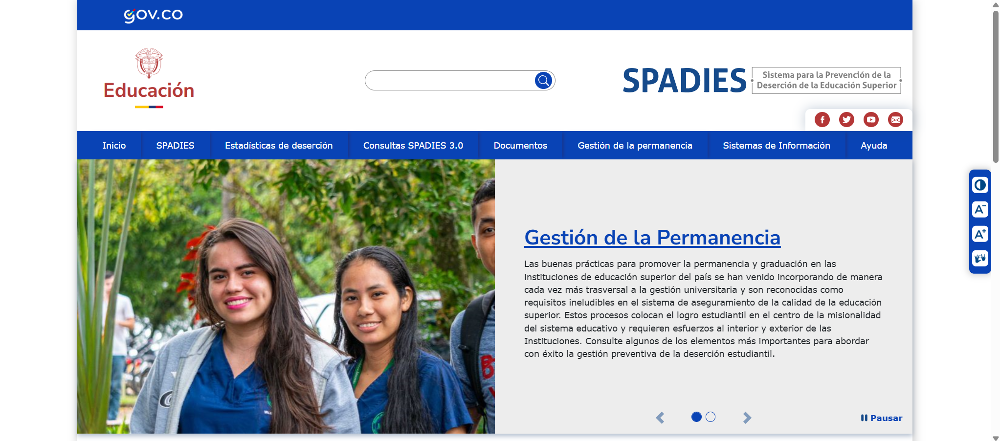 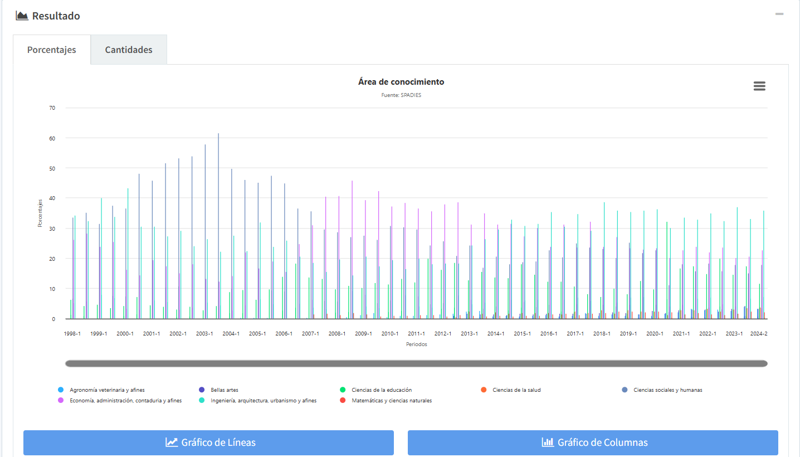 |
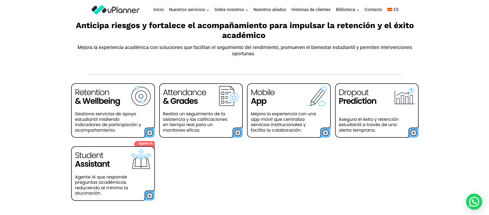 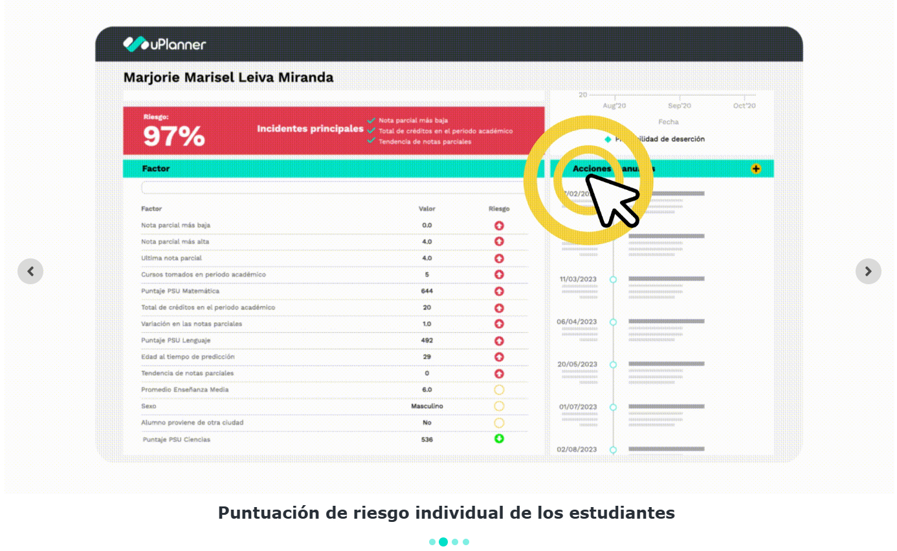 |
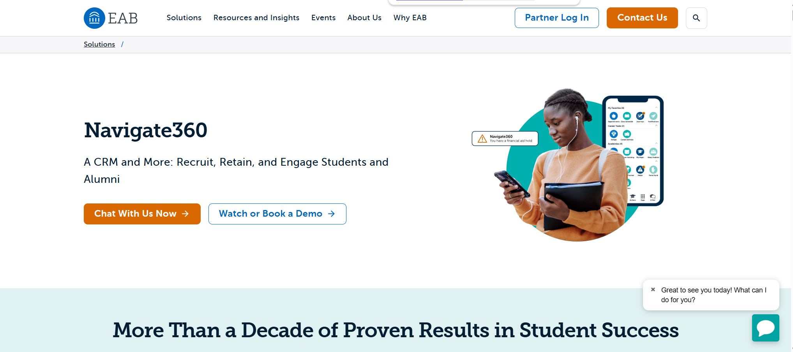 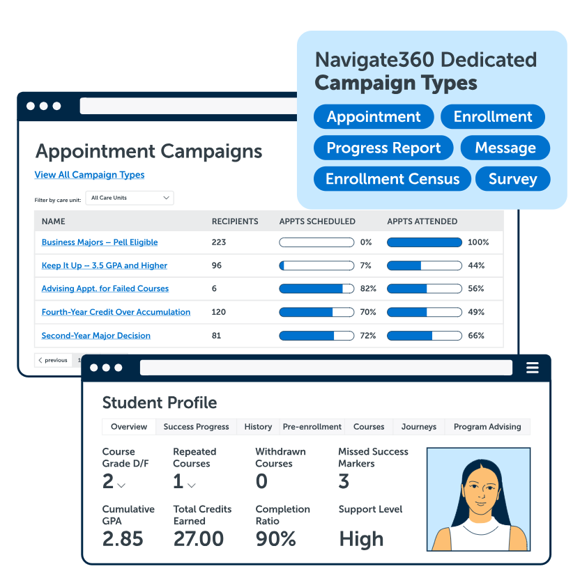 |
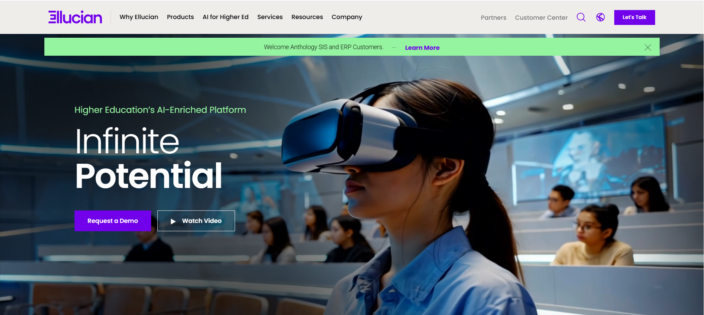 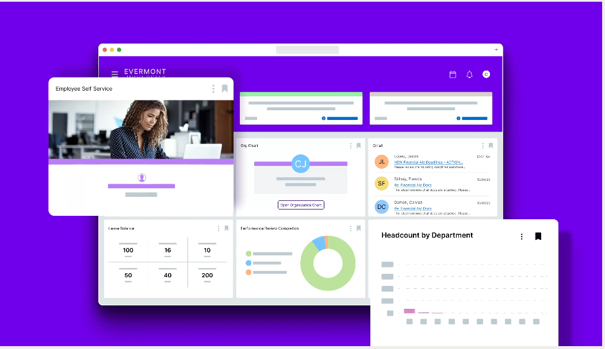 |
| Demo / videos | https://www.youtube.com/watch?v=Q9LFgBr0a20 | https://www.youtube.com/watch?v=dbqWdxmI5eI | https://form.uplanner.com/demo-site-student-experience | https://www.youtube.com/watch?v=Q9LFgBr0a20 | https://www.youtube.com/watch?v=Q9LFgBr0a20 | |
| Paleta / identidad | ||||||
| Website | cunexperience-qa.cunapp.pro | https://bersoftsoluciones.com/ | https://www.mineducacion.gov.co/sistemasdeinformacion/1783/w3-channel.html | https://uplanner.com/es/ | https://eab.com/navigate360/ | https://www.ellucian.com/ |
| Company Information | ||||||
| Modelo / enfoque | Plataforma interna para seguimiento integral del estudiante y operación académica. | Software comercial para IES colombianas (éxito estudiantil + bienestar). | Sistema oficial para medición de riesgo y analítica a nivel país. | EdTech LATAM con IA predictiva + acompañamiento multicanal. | Suite global de student success con IA + advising + app. | Módulo de retención integrado al ERP Banner (workflows + analítica). |
| Diferenciadores | CTAyudaSaber ProHorario integrado | Contexto ColombiaEncuestas config. | SNIES/ICFES/ICETEXSin intervención | IA riesgoChatbot IAuExperience | IA avanzadaCitas | BannerCohortes |
| Funcionalidades Clave (resumen) | ||||||
| IA predictiva (deserción) | No (hoy) | Limitada | Sí (riesgo) | Sí (IA) | Sí (avanzada) | Sí |
| Módulo de intervenciones | Sí | Sí | No | Avanzado | Avanzado | Sí |
| Notificaciones masivas | Sí | Básico | No | Multicanal | Multicanal | Multicanal |
| Programación de citas | No | No | No | Chat + cita | Sí | Sí |
14 funcionalidades clave evaluadas. Incluye una breve explicación de cada término para público no técnico.
| Funcionalidad | CUN Experience 🇨🇴 Colombia |
ADVISER Bersoft 🇨🇴 Colombia |
SPADIES 3.0 🇨🇴 MEN |
uPlanner 🇨🇱 LATAM |
EAB Navigate 🇺🇸 Global |
Ellucian 🇺🇸 Global |
|---|---|---|---|---|---|---|
| Acceso y seguridad | ||||||
|
Autenticación institucional / SSO
Inicio de sesión con la cuenta de la institución (ej. Google/Microsoft) sin crear usuario nuevo.
|
Google SSO | SSO local | Login MEN | SSO + LMS | SSO múltiple | SSO + LDAP |
|
Roles y permisos por perfil
Define qué puede ver/hacer cada tipo de usuario (estudiante, tutor, bienestar, admin, etc.).
|
Sí | Sí | Básico | Avanzado | Avanzado | Avanzado |
|
Aviso de confidencialidad de datos
Mensaje/consentimiento para uso responsable de información sensible del estudiante.
|
Sí — único | Básico | Básico | Básico | Básico | Básico |
| Dashboard y seguimiento | ||||||
|
Dashboard 360° del estudiante
Vista completa del estudiante: desempeño, alertas, historial, apoyo recibido y estado académico.
|
Completo | Completo | No — solo IES | Completo | Completo | Completo |
|
Búsqueda de estudiante por cédula
Encontrar rápidamente un estudiante con su documento/ID para atenderlo o revisar su caso.
|
Por cédula | Por cédula | Por cédula | Sí | Sí | Sí |
|
Alertas de riesgo académico
Señales tempranas de posible problema (bajo rendimiento, inasistencia, riesgo de deserción, etc.).
|
Manual | Reglas básicas | Cálculo riesgo | IA predictiva | IA avanzada | IA predictiva |
|
Módulo de intervenciones
Registro y seguimiento de acciones de apoyo (llamadas, acompañamiento, remisiones, compromisos).
|
Sí | Sí | No | Avanzado | Avanzado | Sí |
|
Gráfica de promedio acumulado
Evolución del promedio del estudiante en el tiempo para detectar caídas o mejoras.
|
Sí | Sí | Estadístico | Avanzado | Avanzado | Sí |
|
Horario estudiantil integrado
Consulta del horario desde la plataforma sin depender de otro sistema o documento aparte.
|
Sí — único | Sí | No | Parcial | Parcial | Sí |
| Encuestas y bienestar | ||||||
|
Encuestas de caracterización
Formulario para conocer perfil del estudiante (situación económica, hábitos, necesidades, etc.).
|
Sí | Configurable | Socioeconómica | Sí | Sí | Sí |
|
Módulo de bienestar psicosocial
Gestión de casos de bienestar: apoyos emocionales, seguimiento, remisiones y registro de atención.
|
Sí | Sí | No | Parcial | Sí | Limitado |
| Comunicación y soporte | ||||||
|
Notificaciones masivas
Mensajes a muchos estudiantes (email/SMS/WhatsApp/in-app) por eventos, alertas o campañas.
|
Sí | Básico | No | Multicanal | Multicanal | Multicanal |
|
Chatbot / FAQ inteligente
Asistente que responde preguntas frecuentes; idealmente aprende y da respuestas 24/7.
|
FAQ estático | No | No | Chatbot con IA | IA conversacional | FAQ básico |
|
Programación de citas / advising
Agenda de reuniones con consejeros/tutores (reservar, confirmar, recordatorios y seguimiento).
|
No | No | No | Chat + cita | Avanzado | Sí |
| Gestión financiera y académica | ||||||
|
Información financiera integrada
Saldos, pagos, estados de cuenta y apoyos (créditos/auxilios) dentro de la plataforma.
|
CTAyuda + saldos | Sí | No | Pagos básicos | Limitado | Banner Finance |
|
Gestión de grados / Saber Pro
Proceso de graduación y preparación/seguimiento de pruebas (como Saber Pro) desde el sistema.
|
Único — Saber Pro | Parcial | No | No | No | Básico |
|
App móvil para estudiantes
Aplicación (o experiencia móvil) para que el estudiante consulte y gestione servicios desde el celular.
|
No | No | No | uExperience app | Sí | Responsive |
|
Reportes de deserción / analítica
Indicadores y reportes para entender permanencia, riesgo, cohortes y tendencias.
|
Básico | Básico | Nacional avanzado | Avanzado | Avanzado | Avanzado |
Brechas identificadas comparando con referentes colombianos, latinoamericanos y globales.
uPlanner ya opera en Colombia (Uniandes, EAFIT, Uniminuto) con modelos de riesgo individual por estudiante. CUN podría adoptar una lógica similar o conectarse a los datos de SPADIES 3.0 del MEN para enriquecer sus alertas, que hoy son manuales.
Referente: uPlanner Colombia + SPADIES MEN
SPADIES integra SNIES + ICFES + ICETEX para todas las IES del país. CUN Experience podría consumir esta API para enriquecer sus reportes de deserción con contexto nacional y comparar el desempeño de CUN contra el sistema educativo colombiano.
Referente: SPADIES 3.0 — Ministerio de Educación Nacional
Ni CUN ni ADVISER tienen este módulo. uPlanner lo implementó con agendamiento por chat e IA. Agregar citas con consejeros o tutores directamente en CUN Experience cerraría el ciclo de acompañamiento sin salir de la plataforma ni usar herramientas externas.
Referente: uPlanner Colombia + EAB Navigate
uPlanner incorporó un agente IA que responde preguntas académicas en español 24/7, reduciendo carga de soporte. El FAQ actual de CUN es estático. Un chatbot respondería dudas sobre matrículas, horarios, requisitos de grado y pagos de forma inmediata.
Referente: uPlanner Student Success Colombia
WhatsApp tiene penetración del 98% entre jóvenes colombianos. uPlanner y los referentes globales ofrecen notificaciones multicanal. Integrar WhatsApp al módulo actual de notificaciones de CUN incrementaría drásticamente tasas de apertura y respuesta estudiantil.
Referente: uPlanner LATAM + Ellucian Retention